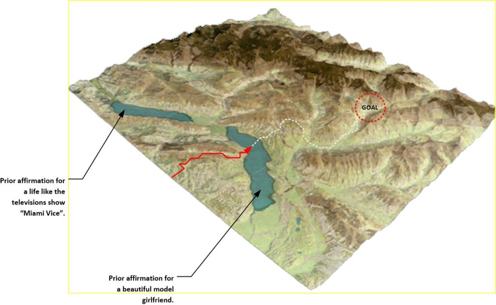
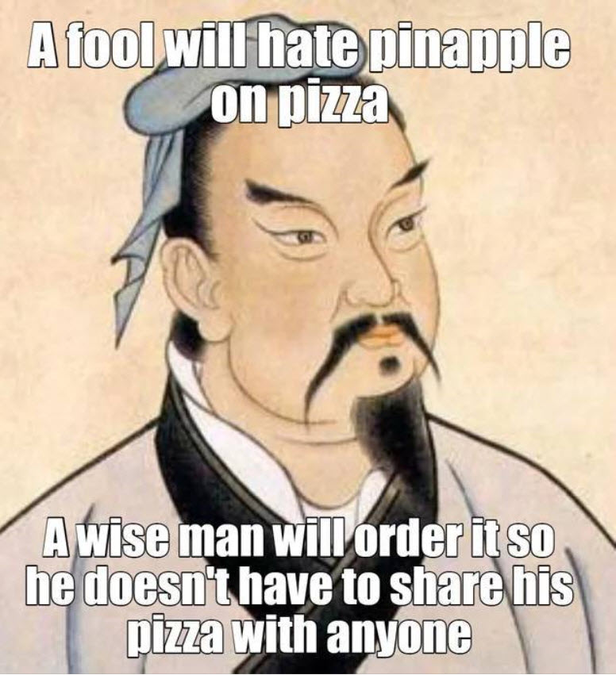
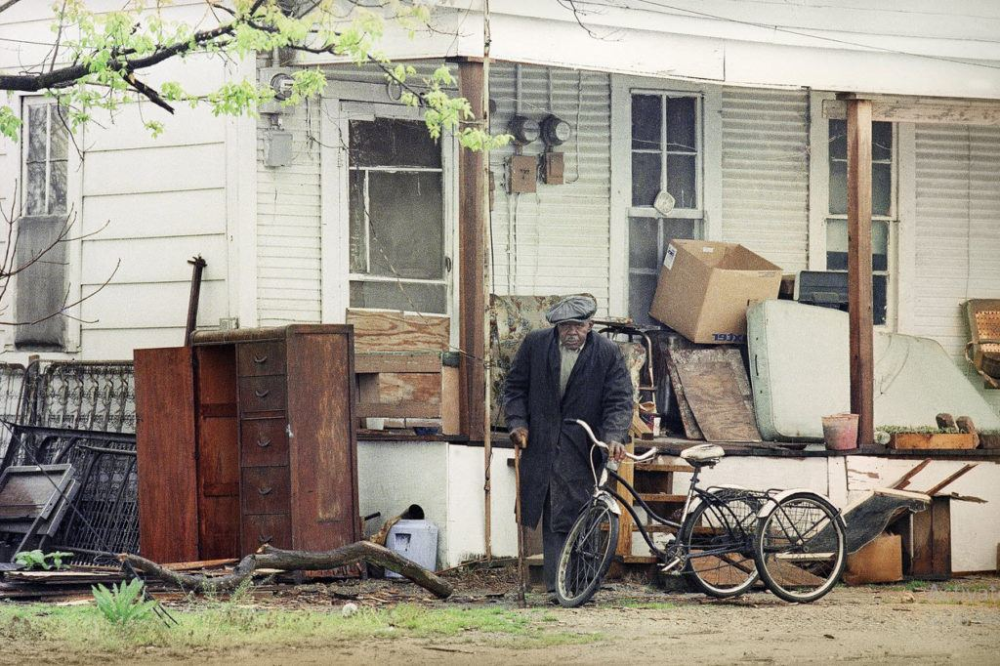
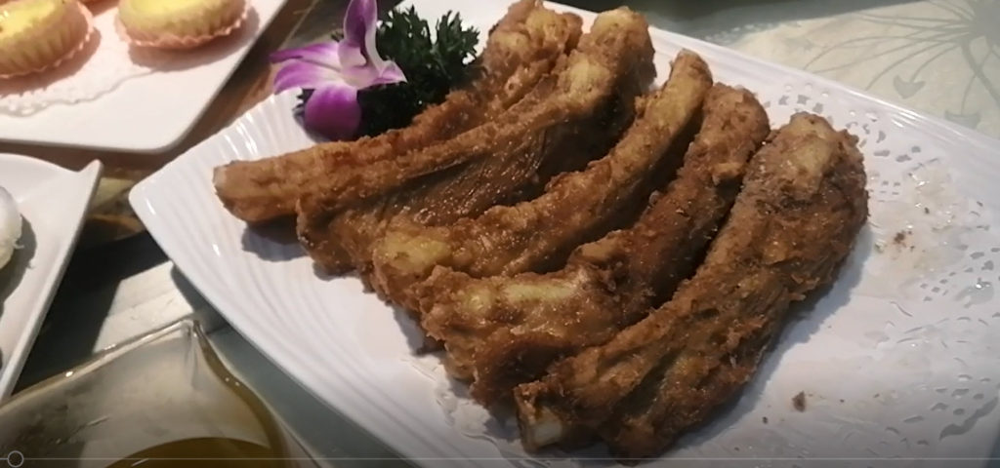
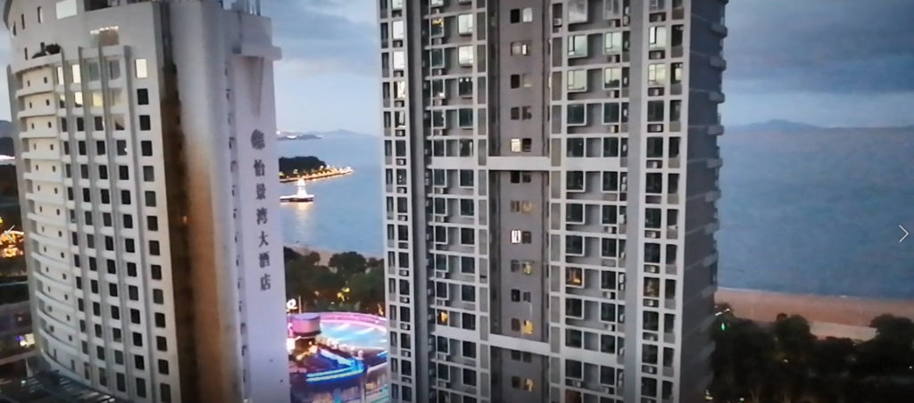

Today I have been busy getting ready for another photo shoot. Yeah. No kidding. Somehow, I and my entire family ended up getting roped into being models for a number of advertising firms, and a few days out of our week we spend at various photo studios on shoots. It’s a lot of work.
Oh. “Roped in” isn’t really accurate. It’s actually more like “opportunities arose ” and we took advantage of them, and they flowered and prospered.
Some of the shoots are in one or two main studios. Sometimes we use third-party studios as well, and there have been many, many outdoor photo shoots. Generally we go to one of the studios and get the makeup and costumes ready. This takes from two to three hours. Then we troop down to the photo shoot location. These off-site shoots take about 20 or so people, on top of the various makeup folk, grips, and all the rest.
We end up getting a small group of lookers-on that gather around and watch us. So we tend to have a real crowd of people hanging all around us. I suppose that it’s a real sight, I’ll tell you what. Today it was around ten to twenty people and maybe three to four infants. I guess we are the hottest thing to hit Zhuhai.
Our various photographers have told us that we are considered “premium” models. Which means that we are the top choice in the modeling industry I suppose. WTF? and why, for goodness sakes. It’s one of those things that just doesn’t make sense. Not at all.
Who would figure that my daughter would end up being a model?
My wife, well I can understand. She has this great skin. Really soft and flexible. It’s like she was born with natural hydration. It’s really quite amazing, and with her perfect eyebrows, well it’s “game over”.
But me? Give me a break.
What the Hell?
You know, I never specifically asked for this.
I never put “I will be a model” in any of my affirmation campaigns. But you know, that is how it happens, don’t you know. You picture a kind of lifestyle and a kind of life, and then suddenly your world-line template changes and you end up having all sorts of “off the wall” experiences that eventually take you to your end goals.
Off the wall, meaning unusual and unexpected.
As far as all this goes, I have no idea where it will take me, and take us. But I’m going with the flow, riding it out, and seeing what opportunities that it will present for us. You never know. Don’t you know.
Opportunities.
What do you know… about models.
My Affirmation Campaign to have a model as a girlfriend.
Actually, there was a time, a long time ago, when I wanted to have a beauty model as a girlfriend.
But it was a long time ago.
Oh, about twenty five years ago, it was a different time. It was a different place. I was much younger then, and hurting. The movie “Twister” came out and was in the theaters, as was the witch move “The Craft”. And oh my golly was it a different time. Would you believe that a burger at Burger King… for a “Whopper” was $1. Yup! That’s right.
I friggin’ lived off those things.
After my first divorce, I was fed up (as are everyone who has ever gone though such a horrific and trying experience) and I wanted something (someone) different. Not in the sexual sense. But in the personality department. I wanted, or desired a woman who was her own woman. I wanted a strong woman. I wanted a confident woman. I wanted, and needed a beautiful strong and confident woman who would be direct with me and honest with me and who I would be able to talk with.
Jeeze! You would think that it wouldn’t be so damn hard.
Oh, sigh. Not so.
So I started some affirmation prayer campaigns to improve my life. And of course, that meant that I would have a girlfriend.
Being lonely sucks. It’s not freedom. It’s coming home to a dark and empty home with no life except the flickering blue monitor and the television. You eat a quick meal alone. And you end up eating what ever is easiest to make. Maybe cereal. maybe eggs. Maybe a hamburger. Maybe a pizza.
I wanted a companion. I wanted a girlfriend.
Well, I didn’t want just any girlfriend. I wanted the best girlfriend. And in my mind, at that time, the ideal of what beauty was came from Playboy, Baywatch, and movies. So I figured, “what the Heck“, and “shot for the sky“.
So I had a simple statement;
I am living with a beautiful, thin, blonde, fashion model.
And you know what?
Come on MM readers, you know exactly what happened.
I did my affirmations and moved on. At that time I was conducting a three month on / three month off affirmation campaigns. Months passed. I met some girls. I dated a bunch, and was living life and then, approximately three years later it happened.
I “hooked up” with a fashion model.
She was exactly as I vocalized it. She was exactly as I specified her to be. Exactly as I wanted.
- Thin. Not twiggy. Just healthy thin.
- Beautiful. Stunningly beautiful. (Her driver’s license picture was the most beautiful one that I have ever seen in my life.) I mean, Jeeze!
- Blonde. Not bleach blonde. But real blonde hair. And in a mane no less! I did not specify this, but oh boy did I want it!
- Absolutely perfect lips. Stunning eyebrows. Perfect nose. Pretty blue eyes. Thin waist, and a nice swan-like curve to her back.
- And she was a beauty model. She really was. She was a real, honest to goodness (go to photo shoots) model.
- And she moved in with me.
I have to tell you all that when she walked down the street, cars would stop. People would look out their windows at her. And I mean it when I tell you that the moment I was out of ear-shot, other guys would “make a pass” on her. Jeeze!
So what was the problem?
Ugh!
Her personality was one of a self-centered narcissist. That’s the problem. And that personality (that she had) was so foul and repulsive to me that I didn’t want to go near her. No matter how beautiful and luscious she was. I just couldn’t bear to live with her, and so many times her personality repelled me so that I didn’t want to be near her, talk with her, have sex with her, or do anything with her.
No matter how sexy she appeared. no matter how sensuous and appealing and feminine she behaved, and no matter what temporary personality she masked, I couldn’t stand her. She repelled me, and I had zero desires for any kind of sex or intimacy with her. Zero.
So, yeah. We lived together. But it was not what I wanted.
It was (instead) what I ordered through my prayer affirmation statements in my campaigns.
“Let the buyer beware.”
Eh?
Her name was CJ, and there is no question that she must be one of the most beautiful, physically attractive people to walk this earth. She probably has an Instagram account now, but who knows where she is now. The last time I talked with her was after my cat Texie died, and she was worried about me, and wanted to console me.
She wasn’t all that bad. Just not right for me.
Relationships
Women will understand, but not so much the men-folk. Relationships are very, very, VERY important. Far more important than the physical images that we project. But in today’s society it is all images, and impressions. And thus it’s all a big lie.
You cannot capture feelings of love, attractiveness or specialness in a picture. Instead it is something that you experience.
Lessons learned
You need to reach down deep and find out what you really want out of life, and go for it. Not what you think might make you happy.
For instance, I personally think that Maine Coons are the most attractive cats, but if one of my long lost little buddies reincarnates near me, I will take him (it) in what ever form, or shape that materializes beside me. I miss our companionship.
Find out what you want deep down inside. Rely on your feelings to guide you. Do not fall for fake images or pretend illusions. Go and strive for the most basic elements that will massage your soul.
Ghost Campaigns
Right now, you could actually say that I am married to a professional model.
I mean me, and my entire family are now (as I said earlier) roped into being models for various advertising agencies. Perhaps one day you will see a picture of me in some airport billboard, holding a glass of brandy, a cigar in one hand and an expensive watch on my wrist. And you can point and say…
“…hey! I know that guy!”
LOL. But the thing is, I wonder if the idea that I am living with a model is a harmonic resonance from my earlier campaign that I had that manifested CJ? And if so, as I have stated before, since there is no such thing as time, your position in the world-line template is relative to the impressions made by the sum total of all your thoughts relative to that singular point in your life.
Viewing the events of these past few weeks as a model, I cannot help but wonder about the CJ connection, and the creation of always present “Ghost Campaigns”. Which might lead to other similar events that will stack up upon each other.
So consider this idea and consider this concept.
The Key Concept
Previous affirmation prayer campaigns never leave, they stay active until they are dismissed.
Now, there does seem an element of “fading away” over time. So if you do not maintain your affirmation campaigns, you will end up reverting back to your pre-birth world-line template.
This being stated, however, there actually is an element of “stickiness” to your affirmations.
The best way that I can describe this is with a piece of chewing gum.
Chewing Gum Example
First. When you first start a brand new affirmation, inside an affirmation campaign, it is like buying a stick of chewing gum. You go into a store, you pick out the chewing gum. you pay for the gum, and you take it home.
Second. When you finish your affirmation campaign, and enter the “wait period”, that is when you take the gum out of the paper wrapping and the foil, and put it in your mouth to chew upon. And the entire time when you are living life you are chewing that gum over and over.
Third. Over time, that gum starts to lose it’s flavor. So you need periodic mentions of that object / goal / want in subsequent affirmation campaigns. But even if you don’t mention it, you will still be chewing the gum. This is true even if you forgot about the gum.
Fourth. Eventually, over time your gum will be ready. And you will take it out and put it there (on the wall or under the table). And there it is! Your goal has been achieved!
Fifth. If you do nothing, eventually the gum will fall off the wall, or from under the table. No matter how sticky it is, it is not immune to the effects of time. And it falls away.
Sixth. But, if you look closely to where the gum was, you will see that there is still gum residue all around the spot where the gum was placed. This “residue” still exists no matter what, and it affect all of your subsequent affirmations and travels.
Another way of looking at this is with automobile tires.
Automobile Tire Example
If you imagine a prayer affirmation campaign as a car, and the world-line template as a terrain that the car must drive though, then you will realize that certain tires on the car can only go into certain areas.
- Racing tires are for speed on highways.
- General use tires are for most residential areas and city driving.
- Mud tires are perfect for mud and rough terrain.
- Snow tires are great for snow and winter driving, but bad otherwise.
If you have a major goal in your affirmation campaign, it is like putting on a specific set of tires on your vehicle.
As such, as the world-line template changes, you will have easier travel in some sections, and more difficult travel in other sections. And thus, even though you might not be aware of it, that previous affirmation campaign that told you to put rock-climbing tires on your vehicle really made the last few weeks much easier for you then they would have normally been.
When you have prior or previous affirmations, it is like you having special “custom tailored” terrain for you to drive upon awaiting you in your future. You see, when you make an affirmation statement; that statement creates as target and a goal.
But that target or goal is not a singular fixed point. It is a region.
And those regions might be near or far, and you might obtain that region in 1995 or again in 2021, but those regions still exist no matter what.
Consider this terrain map. This map omits the simplistic mesh grid showing world-line and instead show it as a solid mass, and colored in the standard geographical topography that all of us understand. Normally, I do not want to use this, but in this case, I will make an exception.

Actually guys, imaging the world-line template as physical terrain is very accurate as long as you realize that each element of that terrain represents a specific type and kind of world-line. Water means that you might have to "swim" or change the way you traverse the MWI. Mountains means that you will have a more difficult bout of transit, and ice covered mountains are even worse.
You see, every time you make a prayer affirmation, it lays down a soft of “highway” or a foundational path. You can visualize it as a pond, as in the above image, or as something else, but it still exists.
It exists all over your template. In your past. In your present. And in your future. Even if you made those affirmations way back in 1983, they still exist. It’s just that their magnitude and influence is reduced somewhat.
And whether you stay on that path (enjoy the fruits of your affirmations) or wander off, that path remains on your world-line template.
In my case, the desire to have a girlfriend who was a beautiful model laid down some terrain on my world-line template that exists no matter what other wishes, desires or dreams that I focus on. That path is still there. Maybe I will go back on it, or maybe I won’t. But the primary foundational structure is there.
So again, life moves on.
And in my case, while I once had an affirmation campaign in which I lived with a beautiful model, I find myself still resonating in that reality.
Girlfriends came and went.
I lived life, took jobs. Lost jobs.
Moved all over.
Got married, and you know what?
No, my wife is not blonde. No, she is Chinese, but all the rest pretty much fits.
Which means that each and everyone of your affirmation campaigns still exists in one form… or the other.
In one form… or the other.
Handy Hint
Therefore, to play it safe, you must always be positive. Try to maintain positive affirmations no matter what. If you throw out something negative in the template, even if that goal has materialized, you will still need to deal with the “stickiness” of that particular negative affirmation.
Do not be too specific
Oh, and by the way…
Do not be too specific, be general in most cases, unless there is a really specific item or element that is important to you.
Imagine you have a long series of affirmation campaigns discussing having delicious “Hawaiian Pizzas”. Well, for those who do not know, these are pizzas with ham and pineapple. And some people love them. I mean, who’d figure, but they do.
Here, the specific item (and the focus word) is “pineapple”.
Hawaiian pizza is a type of pizza originating in Canada, best known for having pineapple and either ham or bacon as toppings. Hawaiian pizza is commonly considered controversial, provoking passionate and polarizing debate, mainly focused on the inclusion of pineapple.
-Wikipedia
Now in this example, we will imagine that you have been running affirmations to eat Hawaiian Pizzas in every single one of your on/off campaigns. And sure as heck they do materialize.
After a few years, you find yourself living upstairs to a pizza restaurant and you get an unlimited number of free Hawaiian pizzas because the restaurant owner has been experimenting with different kinds of pineapple and different kinds of ham, and he wants you to try his daily concoctions.
Lucky guy?
Nope. Not luck. It is mind control. You have full control over your mind, and thus over your reality.
Now what I suggest is something here that might give you pause to think.
If you stop asking for Hawaiian pizzas in your affirmations, what then?
Well, I argue that over time, you will not get all those free Hawaiian pizzas. You will still be able to get them, but times will change as your other intentions manifest. Things will change and be different. Perhaps now you have a real fondness for all-meat pizzas.
You know, like a “real” human does.
But the “residue” from those years of affirmations specifying Hawaiian pizza will still exist and still persist. They don’t evaporate. But rather they change to fit the reality and the influences of your current bathes of affirmations.
But how it will manifest is anyone’s idea. It depends on what your other affirmations are and you moment to moment situation.
- You could end up eating pineapple in all your meals.
- You could live and work on a pineapple farm.
- You could end up living in Hawaii.
- You could end up getting allergic to pineapples.
The future, no matter what it will be, will be influenced by your previous affirmations.
And thus the following reality might be a realistic thing to expect;
You live in Malaysia next to a pineapple farm where you own a all-meat pizza restaurant, and have five sons who call you “Big Daddy Poppa Pizza”.
And a fine commentary on Pineapple Pizza

Personal preferences
Every person is different, but I lean toward toward ice cream Sunday girls, meat pie ladies, and Rubin girls with aside of french fries. It has been my experience that most women worth spending time with knows exactly where they are in the food chain and what they are in a relationship.
And why.
And what they want to get out of it.
Things that you an add to your affirmation prayer campaigns
To prevent some latent “mines” or hidden surprises, you might want to add the following affirmation to your campaigns…
- Any previous affirmation campaigns that would conflict with this current campaign are ignored and have no effect. This campaign supersedes all previous campaigns.
Important note
You know guys, this “modeling” is not my primary occupation. I am semi-retired and am involved in multi-million dollar projects. I am actually busily working with two (multi-million dollar) projects right now, and this is but a minor distraction. Truth be told.
Yet…
When you have been running a wide selection of diverse affirmation campaigns for decades, you start to have a very interesting and exciting life. Like guys… you have NO IDEA.
The point in all of this is that the photography ventures not the “end game”. They are something else. And in this case, they are the ghosted echos of a previous affirmation campaign.
These current events are in the lead up to my current set of goals. So no matter what distractions that these events create, I still must focus on my current goal set.
Focus on the goals and manifest your reality.
Since there is no time, all affirmations work together simultaneously
But it is a weighed input. The older and the more remote the affirmation from your present life-line is, the fainer it’s influence becomes. But it never goes away completely.
And thus you have my current life, and my current situation.
The MM lifestyle
I have a home on the beach and married to a wonderful beautiful model. My young daughter is a beauty fashion model as well. We eat well, we go out often. We live in a beautiful stunning area with great lush vibrant colors, an easy going great pace of life, and a wonderful future ahead.
Oh, and by the way…
All these components were all configured in prior verbal affirmation campaigns, but I never would have imagined that they would manifest like this. So… what does that tell you?
Come on. Think.
For goodness think.
You , and yeah you, can think and realize that your thoughts can really alter your reality. Even if you do not believe my narratives, you must admit that the excuses of “coincidences” simply do not “pass muster” or “cut it” in our reality.
What America tried to make MM into
The non-stop barrage of negativity flooding 24-7 on all media, plus the sucky lifestyle of a slave felon sex offender, and the constant worry that you could get thrown make into prison for jaywalking, of somehow being in violation of one new law or the other. Thoughts that would be dominant were I to stay inside of American would have painted my life quite differently.
I would probably living in a place much like this…
And dominant thoughts, though not as powerful as affirmation campaigns would absolutely influence my life at all levels.
All US communication is now solely for domestic consumption as the US internationally carries no authority, moral, legal, or political. It is the United States that is going to end up isolated in the world as our former allies and vassals turn to the future.
The US, alas, cannot see a future that doesn't represent the past of imperial conquest. The Society of the United States is irretrievably broken, due in large part to the Hate Inc. business model of mass media that mirrors that Establishment's strategy to divide and conquer.
The United States is completely irrelevant in the world now, except to its own people who flail in a wasteland of ubiquitous propaganda and group-think.
Posted by: gottlieb | Sep 4 2021 18:13 utc | 5
Do not be under the mistaken idea that what I am now, where I am now, and the life that I live now are all coincidences and accidents. They are not. I absolutely was forced to change my life and get far, far away from those evil psychopaths who wanted to use me, and then discard me like some kind of crumpled Dixie Cup.
This is what they had planned for me…

Despite all this bullshit, I am doing fine.
I attribute it to thought manifestation, and directed thought via affirmation prayer campaigns. And if you too, follow my led and my guidance, you too will have the kind of life that seems so far out of reach right now.
But [1] be patient. [2] Perform your affirmations rigorously. [3] Conduct a campaign, then [4] pause for an equal amount of time. then [5] repeat.
You will be surprised at how great your life becomes.
Expert Tip
Never, ever, ever let others define your life. Do not let them define your thoughts. Do not allow them to work up your emotions, or fears. You must define and control your thoughts. Otherwise you will blow in the winds of whatever is the fear-mongering of the day.
My life.
My life is mine. And there are elements in it that you all might find distasteful or not to your liking. But what I am trying to say is that it’s just perfect for me. And as it is all I really know, I want to be some kind of a sign-post or example to tell you all that you too can have your most wildest dreams come true. You really can.
You define your life. Not others. So refuse to listen to them.
"Why anyone would want to go to that disgusting, dirty, filthy, crime ridden cesspool under the brutal CCP regime is beyond me."
My Neighborhood.. Check out the video. I live in a very middle class neighborhood. This is typical residential China. This area is a mixture of residential and small business establishments.
"Have you seen how these people live? My Lord, they live in filth and squalor. And the crowds! And the dust and smog! Oh, and the horrible pale complexions, you can tell that they despise their lives."
Food… check out the video. I do eat well. Though, the food is very unlike what you would find in America. In fact, the “Chinese” food that you get in the United States does not resemble anything found in China, for the most part.
"The Chinese are starving. That is indefensible. And the only reason why you don't hear about it is because the brutal CCP regime controls all news. There is no freedom in China."

Where I live…check out the video and my commentary.
Most everyone in China lives in building complexes. This is the area outside the front door to my building complex. My building complex hosts six residential towers, and a central park, pool and recreation facilities.
"Hey! Everyone knows that there isn't any freedom in the CCP regime, and that the poor people are being worked to death. They imprison Uighur's for their religion, and sexual exploitation of children is the norm rather than the exception."
From my living room. A good night to everyone from MM. You can watch the video here.
